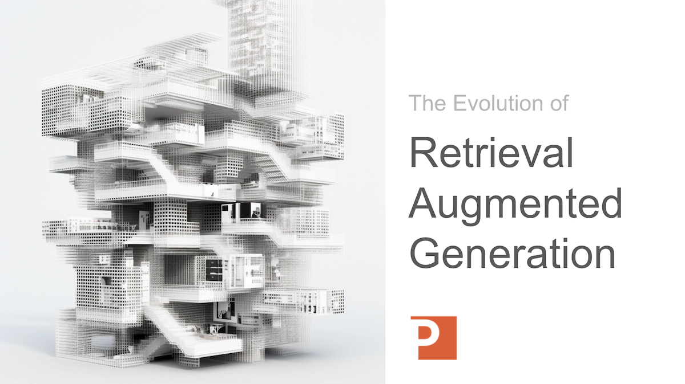

Your Data Warehouse Has the Answers.
Your People Are Still Looking for Them.
Patterson Consulting builds Decision Intelligence Agents that automate the execution layer of cognitive labor — so your line-of-business leaders spend less time assembling data and more time making decisions.
Your Analytics Stack Was Built for Engineers.
Your LOB Leaders Need Decisions.
Line-of-business leaders don't reason in metric definitions or schema. They reason in performance, risk, and decisions — and most analytics tools were never designed for them.
Read: What Is Decision Intelligence?Hours Lost to Data Assembly
Knowledge workers spend 40–60% of their time retrieving, correlating, and assembling data — work that should be automated, not performed by the people whose time should be most carefully protected.
Dashboards Deliver Panels, Not Answers
A regional ops manager doesn't reason in metric definitions. She reasons in performance, risk, and decisions. Dashboards force her to become the analyst — assembling a narrative from panels that were designed for the data team that built them.
Decision Latency Compounds Into Loss
When context takes hours to reconstruct, decisions get deferred, escalated, or made on incomplete information. Decision latency isn't just a productivity problem — it's a measurable operational cost that compounds across every property, every week.
Not All Cognitive Labor Is Equal
Every knowledge work role divides into three distinct layers — each with a different relationship between labor cost and business value. Understanding this is the foundation for modeling what automation actually delivers.
Read: The Three Layers of Knowledge WorkExecution Layer
Data retrieval, synthesis, assembly, and report generation. These tasks must be done correctly — but they are repeatable by definition. They are the primary target for cognitive labor automation.
Automate this layerJudgment Layer
Diagnosis, prioritization, interpretation, and recommendation. This is where experienced people create the most value — and where time freed from execution work gets reinvested when automation works correctly.
Amplify this layerStrategic Layer
Direction setting, resource allocation, and organizational learning. The compounding layer — where decisions made today shape operations for months. Highest leverage, lowest time allocation in most organizations.
Protect this layerWhen 70% of your FP&A team's execution work is automated, they don't save 35% of their time — they redirect it to judgment and strategic work that generates 3–7× more business value per hour. The execution-layer saving is a floor, not a ceiling.
Decision Intelligence Agents, Deployed and Managed
Patterson Consulting designs, deploys, and manages Decision Intelligence Agents tailored to your functional areas. We compress the discovery and prototyping cycle from months to hours — so the first conversation with your team is about which agents to scale, not whether agents work.
Our Knowledge Work Foundry analyzes your organization's actual role descriptions, identifies the highest-leverage cognitive labor candidates, and generates working agent configurations before the meeting ends. The evaluation conversation starts where it should: which of these do we scale first, and what does the return look like?
Learn About the ServiceFunctional Area Analysis
Map your organization's cognitive labor in a day, not months. We surface your highest-leverage automation candidates from actual role descriptions and workflows — not a generic industry template.
Working Agent Prototypes
Not mockups. Not slide decks. Working agents configured for your specific workflows, demonstrated live in the meeting. Prospects describe a workflow and leave with a prototype.
Economic ROI Modeling
Business cases with defensible numbers, not labor-hours spreadsheets. We model the full three-layer value: execution savings plus the judgment and strategic value unlocked by freeing that time.
Platform Integration
Deployed on Databricks, AWS Bedrock, or GCP — your infrastructure, our agents. Output integrates directly into your existing dashboards and reporting workflows.
How Much Cognitive Labor Can You Automate?
Use our free Cognitive Labor Calculator to estimate the automation value across your key functional areas. Model the execution-layer savings and the downstream judgment and strategic value they unlock — in numbers you can take to your CFO.
Try the Cognitive Labor Calculatorof knowledge worker time is execution-layer labor — the automatable kind
value multiplier when execution time is redirected to judgment and strategic work
to build a working prototype — not months — using our Knowledge Work Foundry
Where Decision Intelligence Creates the Most Value
Cognitive labor automation applies across industries wherever recurring decisions consume disproportionate execution time.
Insurance Decision Intelligence
- Claims adjuster context synthesis — reconstruct causal context in seconds, not hours
- Underwriting variant analysis — automated comparison narratives for pricing decisions
- Compliance audit summarization — structured narratives from policy and claims data
Retail Decision Intelligence
- Operations narrative reporting — automated store and regional performance summaries
- Inventory variance analysis — root-cause narratives for shrink, fulfillment gaps, and waste
- Demand signal interpretation — structured context for buy decisions from unstructured data
Municipal Decision Intelligence
- Service request triage — automated prioritization narratives from field and 311 data
- Budget variance reporting — structured explanations of departmental spend deviations
- Infrastructure status synthesis — cross-system condition narratives for capital planning
See Decision Intelligence Live on Your Data Platform
Join our Decision Intelligence on Databricks workshop. We'll identify your highest-value automation candidates, prototype a working agent against your actual workflows, and model the ROI — all in a single session.
Live functional area analysis using your org structure
Working agent prototype built and demonstrated during the session
Economic model you can take directly into an internal approval conversation
The Hitchhiker's Guide to Knowledge Work Systems
A deep-dive article series on the theory and practice of cognitive labor automation, decision intelligence, and the economics of knowledge work.
Browse the full guideWhat Is Generative AI?
An overview of large language models and how they are applied in business today — beyond the hype, into the mechanics that matter for enterprise deployment.
Read the articleDecision Intelligence
How AI closes the gap between data and business judgment — and why the chatbot-for-everyone approach consistently fails to ship, and fails to get used when it does.
Read the articleThe Three Layers of Knowledge Work
Every knowledge work role divides into execution, judgment, and strategic layers. Understanding these layers is the foundation for modeling what cognitive labor automation actually delivers.
Read the articleValue Model for Structural Transformation of Knowledge Work
The economic framework for translating execution-layer automation into full-stack business value — the model behind every defensible ROI conversation.
Read the articleCase Study:
Learn how Quantatec integrated generative AI into their Movias logistics platform.
Quantatec wanted a large language model to answer customer questions about their own fleet data. Patterson Consulting integrated the LLM and delivered consistent, quality answers to users — a real-world example of Decision Intelligence in a logistics context.
Read case study
From the Blog
Recent articles on Decision Intelligence and GenAI from the Patterson Consulting team

Building a Retail Analytics Conversational UX with Databricks Genie
Genie allows COOs and business leaders to ask natural-language questions and receive instant, accurate answers grounded in governed data from Unity Catalog.
ReadAccelerating Retail Decision Intelligence with Agent Bricks
How to accelerate retail logistics decision intelligence using LLMs with Agent Bricks to analyze structured information from your data lakehouse.
Read
The Evolution of RAG
A technical definition of RAG and how retrieval-augmented generation is evolving — the foundation for most enterprise-grade agent memory and context systems.
ReadCommon Questions About Decision Intelligence
Here are answers to the questions we hear most often.
Expert services with our partners

Let's talk about your Decision Intelligence project.
Patterson Consulting engineering teams design and deploy Decision Intelligence Agents that integrate with your existing data platforms and deliver operational narrative to your line-of-business leaders — so they get answers, not panels.
Talk to our experts